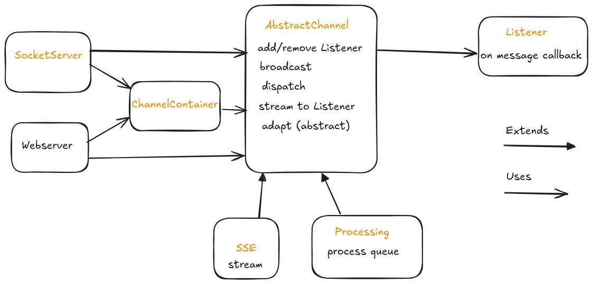

Guide#
Eric is a toolkit for async messaging: channels deliver messages to their subscribers, called connections, and stream them to clients in the channel’s output format. The format of the prefabs is the one of Server Sent Events, so a web server can return a channel’s stream as it is.
Everything works in memory out of the box. Persistence, durable queues, error handling and custom channels are optional parts you add when you need them.
A first example#
The following code creates a channel, subscribes to it, sends a message and streams it. Here is the complete example.
import asyncio
from eric_sse.message import Message
from eric_sse.prefabs import SSEChannel
channel = SSEChannel()
connection = channel.add_connection()
channel.dispatch(connection.id, Message(msg_type='welcome', msg_payload='Hello!'))
async def main():
async for sse_event in channel.message_stream(connection.id):
print(f'Received message: {sse_event}')
if __name__ == '__main__':
asyncio.run(main())
The model#
A message (
MessageContract) has a type, a payload and an optional id.Messageis the plain one,SignedMessageadds a sender.A channel (
AbstractChannel) is where messages are sent: to one connection withdispatch(), or to all of them withbroadcast(). It decides the output format throughadapt().A connection (
Connection) is a subscription to a channel: a listener and its own queue, with an id.add_connection()creates one,register_listener()creates one around your listener.A listener (
MessageQueueListener) is what the subscriber does with each message, inon_message(). It does nothing by default.A queue (
Queue) is where a connection’s messages wait until they are consumed.InMemoryQueueis the default.
How a message travels#
dispatch / broadcast ──> before_dispatch hook ──> connection's queue
│
client <── adapt <── on_message <── consumer
dispatchorbroadcastpasses the message to thebefore_dispatch()hook, that can change it or drop it, then pushes it to the queue of each recipient connection. Sending never waits for consumers.A consumer pops the message from the queue, the connection’s listener receives it in
on_message, and the channel adapts it to its output format.
There are three ways to consume a connection’s messages:
message_stream(): an async stream, what a web server returns to a client. It starts the listener, waits for messages without consuming CPU, and ends when the listener is stopped.deliver_next()andwait_next(): one message at a time, synchronous or async, for code that pulls messages itself. They require a started listener.process_queue(): runs the listener on every queued message in parallel, in an executor, seeDataProcessingChannel.
Prefabs#
SSEChannel: Server Sent Events output, the general purpose channel.DataProcessingChannel: processes queued messages in parallel and streams the results to the client that pushed them.SimpleDistributedApplicationChannel: a mediator between listeners that communicate with each other through actions.SocketServerandSocketClient: drive channels from other processes through a Unix socket.
Making it yours#
Each part has its own extension point, so you only replace what you need:
To change |
Do this |
|---|---|
What happens when a message arrives |
Subclass |
The output format |
Override |
Channel behaviour: subscriptions, streams, filtering, errors |
Override the channel’s hooks, e.g. |
Where messages wait, e.g. a durable backend |
Implement a |
Where channels and connections are stored |
Implement a |
What happens when a queue or a listener fails |
Register error handlers, see Error handling, or use the Dead Letter and Reliable Queue patterns |
Persistence is always explicit: channels and their connections are stored when you call persist on a repository,
never implicitly. Messages are stored by queues themselves, so sending never needs a persist.
When you write your own storage, queue or channel, check it with the test suites in Verifying custom implementations. How to test a custom channel repository shows how, step by step.
Where to go next#
Tutorials: two complete programs, in memory and persisted with SQLite.
Persistence, Error handling, Dead Letter, Reliable Queue and Verifying custom implementations: one topic each.
Class reference: every class, generated from the source code.
Overview#

